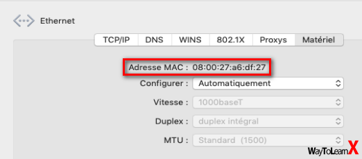

les adresses ip et mac
Premierement nous allons expliquer clairement et simplement
ce que sont les adresses ip et mac.
puis nous allons donner des exemples pour illustrer nos explications.
Qu'est-ce qu'une adresse ip?
Adresse IP definition
Une adresse ip est le nom donner a l'adresse electronique d'un objet connecté.
IP veut dire internet protocol ceci est une chaine de caractères.
l'adresse peut etre privé on l'appelera IP lan ou elle peut etre publible on l'appelera alors IP wan.
Là ou arrive votre ligne internet, votre routeur ,possède un IP wan,le routeur qui fais parvenir internet a vos objet connecté qui eux possède une IP lan
voici quelque exemples illutrer des objet qui peuvent possèder des IP wan et lan


Qu'est-ce qu'une adresse MAC?
Maintenant nous allons expliquer ce que sont les adresses MAC.
MAC veut dire Media access control
- Chaque appareil pouvant se connecter est identifier de manière unique par une adresse
MAC
- il s'agit d'un identifiant distinct de l'adresse IP,qui quant a elle sers a localiser un appareil dans un réseau
- l'adresse MAC est composé de 12 caractères héxadécimaux*
- elle se constitu de 2 groupes de 6 caractères héxadécimaux*
- ces 2 groupes de 6 caractères sont généralement séparé par des guillemets ou des tirets
*Se dit d'un système de numération de base 16.
